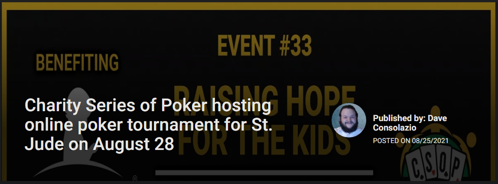
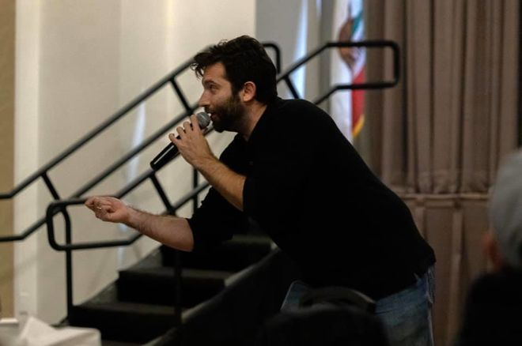

Sept 20, 2021

Paul Schrader's latest movie, "The Card Counter," focuses on William Tell (Oscar Isaac), a man who has done unforgivable things and has found comfort in, and gotten very good at, playing poker. The film is a character piece, an exploration of how some monsters are made — in Tell's case he became one when he was in the military at Abu Ghraib — and how one man creates a life rife with rituals and routine to cope with what he's done.
To read the complete SlashFilm article click here
Sept 10, 2021
Most poker fans have had the experience. A poker-related film or television show features action that really doesn’t play out as it would in the real world.
Joe Stapleton knows the feeling. The longtime poker player, commentator, and comedian hopes his role as a poker consultant on the new film The Card Counter helped add more realism to the story. Hopefully, the film won’t leave poker players rolling their eyes.
To read the complete USPoker.com article click here
Aug 25, 2021

The Charity Series of Poker is a non-profit organization that organizes and promotes charity poker tournaments to raise money and awareness for a variety of worthy charities. Since it was founded in 2014, the CSoP has hosted 32 events to raise funds for 17 different charities. On Saturday, August 28, Charity Series of Poker will be putting on a virtual event to benefit the St. Jude Children’s Research Hospital.
To read the complete Poker.org article click here
Aug 21, 2021

Poker commentator and comedian Joe Stapleton went 18 months without performing his stand-up routine due to COVID-19. But the jokester will get back on the grind August 27 at the Fourth Wall Cafe in Los Angeles, the first of many shows on the horizon for one of poker's goofiest characters.
To view the this episode click here